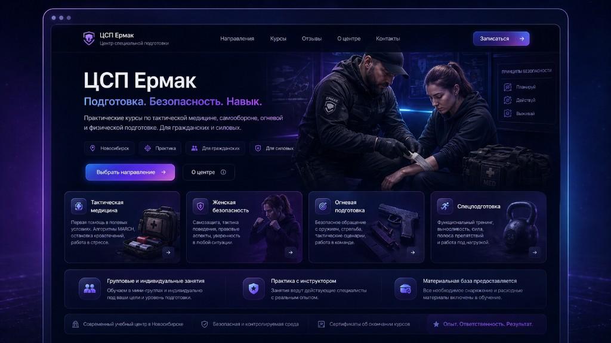

Лендинг под услугу
Для консультаций, курсов, запусков и экспертных продуктов. С оффером, структурой, блоками доверия и заявкой.
Хочу лендингVibe Coder · Web & AI · сайты с характером
Упаковываю экспертов, фрилансеров и небольшие проекты в современные лендинги, портфолио и AI-визитки — с понятной структурой, сильным первым экраном и кнопками, на которые хочется нажать.
Не просто страницу, а понятную упаковку вашей услуги, проекта или личного бренда.
Для консультаций, курсов, запусков и экспертных продуктов. С оффером, структурой, блоками доверия и заявкой.
Хочу лендингЧтобы красиво показать, кто вы, чем полезны, с чем работаете и как с вами связаться.
Хочу визиткуСтраница, которую можно отправить клиенту, добавить на фриланс-биржу или использовать как первую упаковку себя.
Хочу портфолиоЕсли сайт уже есть, но он выглядит слабо: усилим первый экран, кнопки, структуру, визуал и путь клиента.
Хочу доработкуПервые работы в портфолио — это концепты, в которых я показываю подход: структура, визуал, логика страницы и путь клиента.

Концепт-проект
Современный лендинг для эксперта, которому нужно быстро объяснить ценность консультации и привести человека к заявке.

Демо-кейс
Сайт-визитка для начинающего специалиста, который хочет выглядеть уверенно и профессионально.

Коммерческий кейс
Многоэкранная подача учебного центра с акцентом на доверие, направления подготовки и понятный путь до записи.

Визуальная концепция
Лёгкая и доверительная страница для специалиста, где сразу понятны услуги, стиль и запись.
Сейчас я собираю первые коммерческие кейсы, поэтому особенно внимательно отношусь к каждой задаче: мне важно сделать не просто красиво, а так, чтобы проект действительно можно было показывать клиентам.
Первые отзывы после учебных проектов, разборов и демонстрационных работ.
Отзыв после консультации
“Очень понравилось, что стало понятно, как себя презентовать. До этого было ощущение хаоса, а после структуры всё разложилось по полкам.”
Отзыв на визуальную упаковку
“Визуально выглядит современно и не как обычный шаблон. Особенно понравились первый экран и кнопки — сразу понятно, куда нажимать.”
Отзыв по UX и структуре
“Сильная сторона — умение из простой идеи сделать понятную страницу. Не просто красиво, а с логикой для клиента.”
Я смотрю, как человек будет читать сайт: где он заинтересуется, где засомневается, где захочет нажать, а где может уйти.
Кто вы, что предлагаете, почему это ценно и почему человеку стоит написать именно вам.
Первый экран, блоки, доверие, проекты, вопросы, кнопки и логика движения по странице.
Цвет, ритм, карточки, анимации, фото, акценты и ощущение дорогой digital-упаковки.
Можно без ТЗ. Достаточно идеи, ссылки на соцсеть или пары сообщений.
Продумываю, какие блоки нужны, где ставить CTA и как вести человека к заявке.
Подбираю стиль, цвет, ритм, карточки, акценты и общую атмосферу.
Адаптирую под компьютер и телефон, проверяю кнопки, формы и читаемость.
Сайт можно отправлять клиентам, добавлять в профиль или использовать как портфолио.
Я Татьяна Данюкина, vibe coder и Web & AI специалист. Мне интересно превращать идеи, услуги и экспертность в страницы, которые выглядят современно, читаются легко и помогают человеку сделать следующий шаг.
Я смотрю на сайт не только как на красивую картинку. Для меня важно, чтобы в нём был смысл, структура, логика и ощущение: «да, этому человеку можно написать».
Нажмите кнопку — в Telegram откроется мини-бриф. Можно заполнить прямо в сообщении.
Напишите мне пару слов о задаче — я подскажу, какой формат подойдёт, какие блоки нужны и как сделать страницу, которая будет работать на первое впечатление.